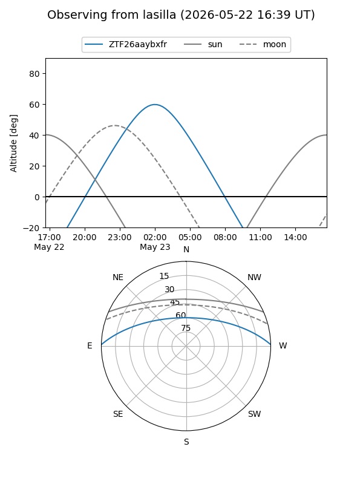
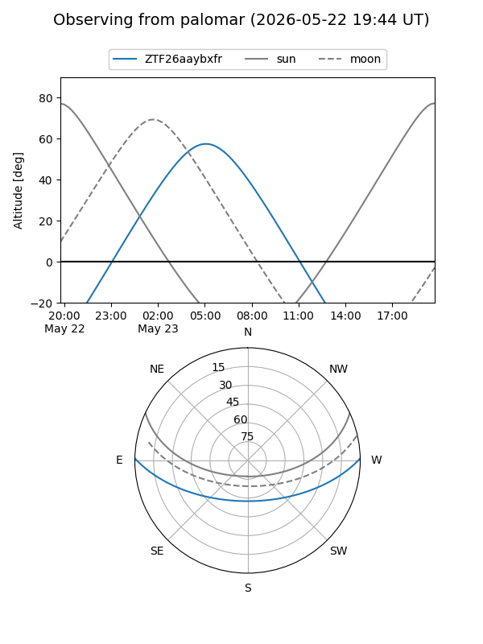

ZTF26aaybxfr
Target ZTF26aaybxfr at 2026-05-23 07:53
Aliases and brokers:
lsst-FINK: link
lsst-Lasair: link
lsst-ALeRCE: link
ztf-FINK: link
ztf-Lasair: link
ztf-ALeRCE: link
alt names
ZTF26aaybxfr (ztf,fink_ztf)
Coordinates:
equatorial (ra, dec) = 199.6777,+1.01177
equatorial (HMS+DMS) = 13:18:42.65,+01:00:42.36
galactic (l, b) = (318.1293,+63.07597)
Flags:
Photometry:
last ztfg=19.47
1 ztfg detections
Lightcurve
Visibility


Additional plots